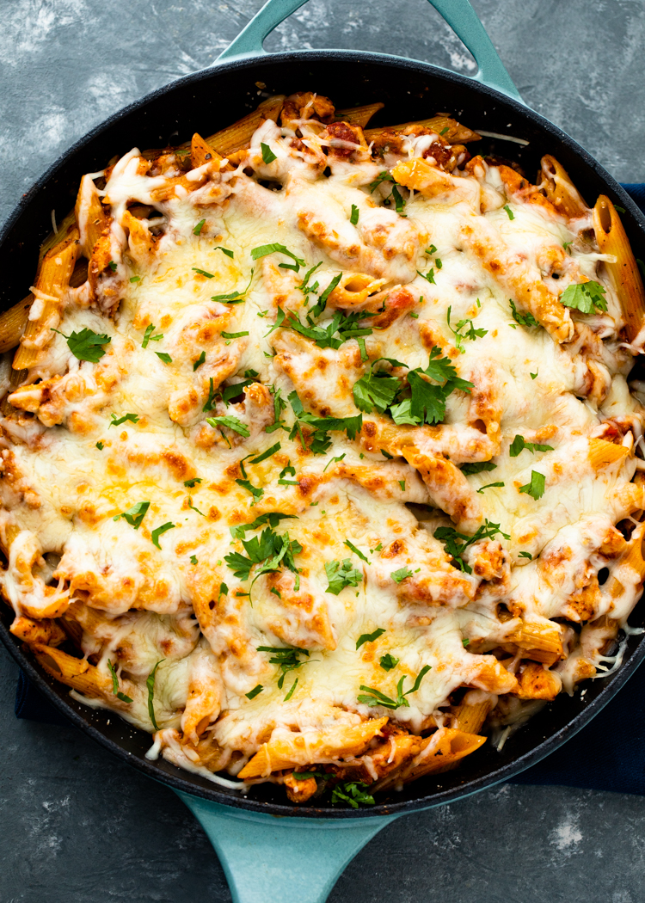

Chicken Pasta

An amazing dish for when you want to switch things up at your house and have something delicious and different.
Its a pasta with chicken and all of that in garlic tomato sauce topped with chessy mozeralla and paremsan.
The perfect cheesyness makes your mouth water as soon as you this work of art.
This dish is very easy to make and takes around 20 minutes in total.
Ingredients (from website)
- 2 chicken breasts cut in strips
- 1 tablespoon olive oil
- 1/2 medium yellow onion chopped
- 1/2 bell pepper chopped
- 3 cloves of garlic minced
- 1/2 teaspoon EACH salt, pepper, & garlic powder
- 1 cup marinara sauce
- 1/2 cup mozzarella or Italian blend cheese
- 1/4 cup Parmesan cheese
- 3 cups cooked pasta and 1.5 cups dry pasta
Steps (from website)
- In a medium saucepan, bring 2 cups of salted water to boil, pour 1.5 cups of uncooked pasta and 1 tsp salt into the water. Cover and allow to cook for 10 minutes.
- While the pasta is cooking, cut chicken breasts and, onion and bell peppers. Heat 1 tablespoon oil in a heavy-duty pan or pot over medium-high heat. Add the onion and bell pepper and saute for 1-2 minutes or until softened. Add the garlic and sautee 30 seconds or until lightly golden. Add the chicken, salt, pepper, & garlic powder and saute until the chicken is browned and almost cooked through.
- Add the marinara sauce and allow to simmer for 5 minutes while the pan is covered. After 5 minutes, drain the water from the pasta and pour pasta on the chicken mixture. Mix well, add the cheese and turn off. The cheese will melt from the heat of the pan. If desired, broil the cheese under the broiler in the oven until bubbly.
- Top with parmesan cheese and enjoy!